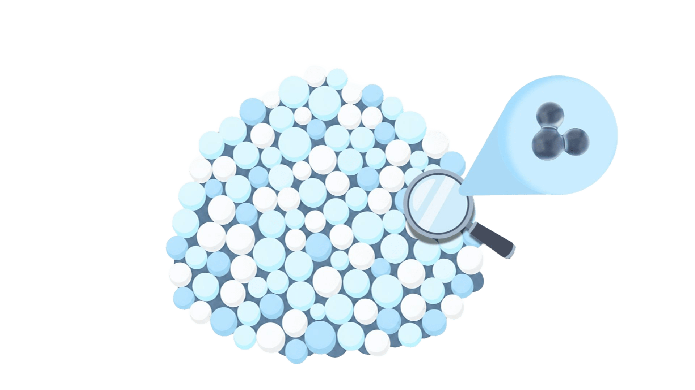
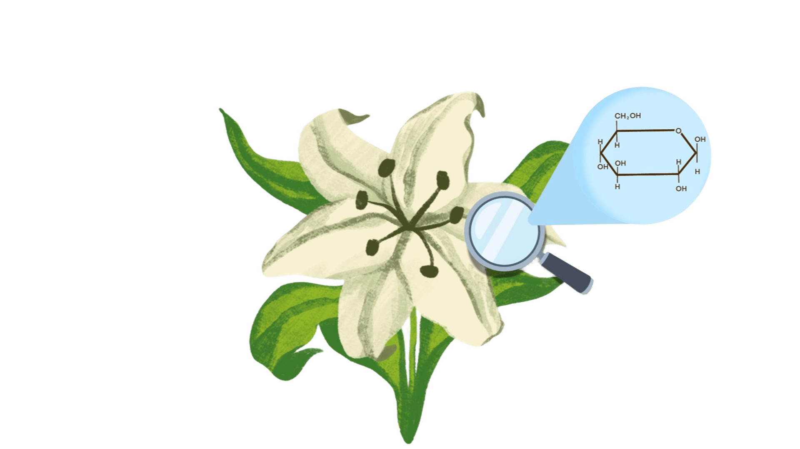
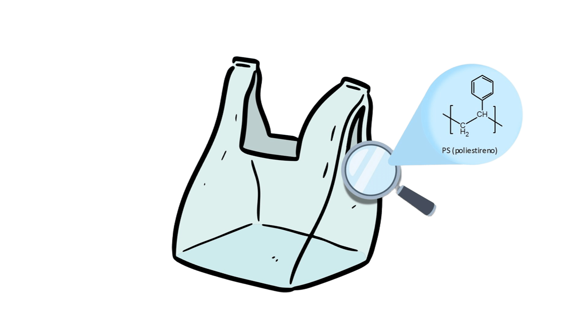
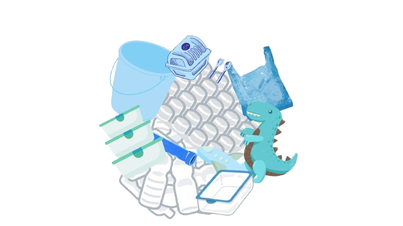

POLÍMEROS
Os polímeros estão presentes em muitos materiais que usamos todos os dias, desde o papel até as embalagens plásticas.
O que são polímeros?
Polímeros são macromoléculas formadas pela união de pequenas unidades chamadas monômeros. Podem ser encontrados na natureza ou produzidos industrialmente.
Impacto ambiental
O descarte inadequado de plásticos pode contaminar o solo e a água, prejudicar os animais e contribuir para a poluição ambiental. A reciclagem e o descarte correto são importantes.No dia a dia
As sacolas de supermercado são feitas de polietileno, um polímero sintético muito utilizado na fabricação de embalagens.Naturais e sintéticos
- Naturais: encontrados na natureza, como a celulose e a borracha natural.

- Sintéticos: produzidos por processos químicos industriais, como o polietileno e o PVC.

Exemplos e utilizações
- Celulose: encontrada nas plantas e utilizada na fabricação de papel e papelão.
- Polietileno: usado em sacolas, embalagens, garrafas e outros objetos plásticos.

Saiba mais
Os polímeros são formados por unidades menores chamadas monômeros. O tipo de monômero e a maneira como essas unidades se unem influenciam as propriedades do material.